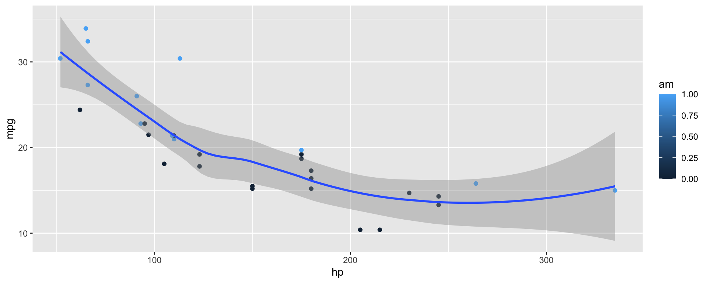

library(ggplot2)
ggplot(mtcars, aes(hp, mpg, color = am)) +
geom_point() + geom_smooth(formula = y ~ x, method = "loess")
Create beautiful interactive slide decks with Reveal.js
Position images or other elements at precise locations

| mpg | cyl | disp | hp | drat | wt | qsec | vs | am | gear | carb | |
|---|---|---|---|---|---|---|---|---|---|---|---|
| Mazda RX4 | 21.0 | 6 | 160.0 | 110 | 3.90 | 2.620 | 16.46 | 0 | 1 | 4 | 4 |
| Mazda RX4 Wag | 21.0 | 6 | 160.0 | 110 | 3.90 | 2.875 | 17.02 | 0 | 1 | 4 | 4 |
| Datsun 710 | 22.8 | 4 | 108.0 | 93 | 3.85 | 2.320 | 18.61 | 1 | 1 | 4 | 1 |
| Hornet 4 Drive | 21.4 | 6 | 258.0 | 110 | 3.08 | 3.215 | 19.44 | 1 | 0 | 3 | 1 |
| Hornet Sportabout | 18.7 | 8 | 360.0 | 175 | 3.15 | 3.440 | 17.02 | 0 | 0 | 3 | 2 |
| Valiant | 18.1 | 6 | 225.0 | 105 | 2.76 | 3.460 | 20.22 | 1 | 0 | 3 | 1 |
| Duster 360 | 14.3 | 8 | 360.0 | 245 | 3.21 | 3.570 | 15.84 | 0 | 0 | 3 | 4 |
| Merc 240D | 24.4 | 4 | 146.7 | 62 | 3.69 | 3.190 | 20.00 | 1 | 0 | 4 | 2 |
| Merc 230 | 22.8 | 4 | 140.8 | 95 | 3.92 | 3.150 | 22.90 | 1 | 0 | 4 | 2 |
| Merc 280 | 19.2 | 6 | 167.6 | 123 | 3.92 | 3.440 | 18.30 | 1 | 0 | 4 | 4 |
| Merc 280C | 17.8 | 6 | 167.6 | 123 | 3.92 | 3.440 | 18.90 | 1 | 0 | 4 | 4 |
| Merc 450SE | 16.4 | 8 | 275.8 | 180 | 3.07 | 4.070 | 17.40 | 0 | 0 | 3 | 3 |
| Merc 450SL | 17.3 | 8 | 275.8 | 180 | 3.07 | 3.730 | 17.60 | 0 | 0 | 3 | 3 |
| Merc 450SLC | 15.2 | 8 | 275.8 | 180 | 3.07 | 3.780 | 18.00 | 0 | 0 | 3 | 3 |
| Cadillac Fleetwood | 10.4 | 8 | 472.0 | 205 | 2.93 | 5.250 | 17.98 | 0 | 0 | 3 | 4 |
| Lincoln Continental | 10.4 | 8 | 460.0 | 215 | 3.00 | 5.424 | 17.82 | 0 | 0 | 3 | 4 |
| Chrysler Imperial | 14.7 | 8 | 440.0 | 230 | 3.23 | 5.345 | 17.42 | 0 | 0 | 3 | 4 |
| Fiat 128 | 32.4 | 4 | 78.7 | 66 | 4.08 | 2.200 | 19.47 | 1 | 1 | 4 | 1 |
| Honda Civic | 30.4 | 4 | 75.7 | 52 | 4.93 | 1.615 | 18.52 | 1 | 1 | 4 | 2 |
| Toyota Corolla | 33.9 | 4 | 71.1 | 65 | 4.22 | 1.835 | 19.90 | 1 | 1 | 4 | 1 |
| Toyota Corona | 21.5 | 4 | 120.1 | 97 | 3.70 | 2.465 | 20.01 | 1 | 0 | 3 | 1 |
| Dodge Challenger | 15.5 | 8 | 318.0 | 150 | 2.76 | 3.520 | 16.87 | 0 | 0 | 3 | 2 |
| AMC Javelin | 15.2 | 8 | 304.0 | 150 | 3.15 | 3.435 | 17.30 | 0 | 0 | 3 | 2 |
| Camaro Z28 | 13.3 | 8 | 350.0 | 245 | 3.73 | 3.840 | 15.41 | 0 | 0 | 3 | 4 |
| Pontiac Firebird | 19.2 | 8 | 400.0 | 175 | 3.08 | 3.845 | 17.05 | 0 | 0 | 3 | 2 |
| Fiat X1-9 | 27.3 | 4 | 79.0 | 66 | 4.08 | 1.935 | 18.90 | 1 | 1 | 4 | 1 |
| Porsche 914-2 | 26.0 | 4 | 120.3 | 91 | 4.43 | 2.140 | 16.70 | 0 | 1 | 5 | 2 |
| Lotus Europa | 30.4 | 4 | 95.1 | 113 | 3.77 | 1.513 | 16.90 | 1 | 1 | 5 | 2 |
| Ford Pantera L | 15.8 | 8 | 351.0 | 264 | 4.22 | 3.170 | 14.50 | 0 | 1 | 5 | 4 |
| Ferrari Dino | 19.7 | 6 | 145.0 | 175 | 3.62 | 2.770 | 15.50 | 0 | 1 | 5 | 6 |
| Maserati Bora | 15.0 | 8 | 301.0 | 335 | 3.54 | 3.570 | 14.60 | 0 | 1 | 5 | 8 |
| Volvo 142E | 21.4 | 4 | 121.0 | 109 | 4.11 | 2.780 | 18.60 | 1 | 1 | 4 | 2 |
10 Built-in Themes (or create your own)


Quickly jump to other parts of your presentation

Toggle the slide menu with the menu button (bottom left of slide) to go to other slides and access presentation tools.
You can also press m to toggle the menu open and closed.
Free form drawing and slide annotations

Use the chalkboard button at the bottom left of the slide to toggle the chalkboard.

Use the notes canvas button at the bottom left of the slide to toggle drawing on top of the current slide.
You can also press b to toggle the chalkboard or c to toggle the notes canvas.
Press o to toggle overview mode:

Hold down the Alt key (or Ctrl in Linux) and click on any element to zoom towards it—try it now on this slide.
Press s (or use the presentation menu) to open speaker view

Live side-by-side preview for any notebook or text editor including Jupyter and VS Code